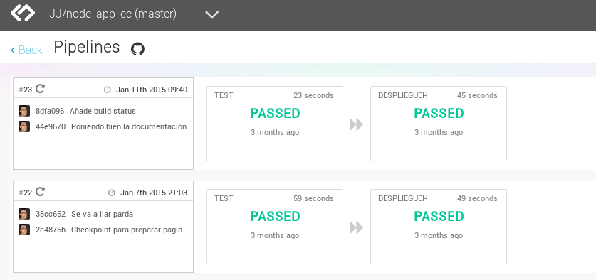
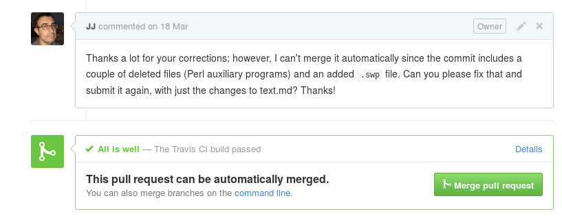

En busca del Gran Botón Rojo
La importancia del botón
ポカヨケ
module.exports = function(grunt) { // -*-Javascript-*-
require('load-grunt-tasks')(grunt);
var port = grunt.option('port') || 8000;
// Project configuration
grunt.initConfig({
pkg: grunt.file.readJSON('package.json'),
meta: {
banner:
' * DevOpsOSSAzureDays presentation <%= pkg.version %>' +
' (<%= grunt.template.today("yyyy-mm-dd, HH:MM") %>)\n' +
' * http://github.com/JJ/devops-days\n' +
' * Apache licensed...\n' +
},
qunit: {
files: [ 'test/*.html' ]
},
});
// Run tests
grunt.registerTask( 'test', [ 'qunit' ] );
};
Reveal.addEventListener( 'ready', function() {
test( 'Reveal.isReady', function() {
strictEqual( Reveal.isReady(), true, 'returns true' );
});
} );
Reveal.initialize({ pdf: true });
it('should set result right', function (done) {
request(app)
.post('/porra/resultado/liga/2014/mad/2/bcn/2')
.expect('Content-Type', /json/)
.expect(200)
.end( function ( error, resultado ) {
if ( error ) {
return done( error );
}
resultado.body.should.exist;
resultado.body.should.have.property('resultado','2-2');
done();
});
});
travis.yml
language: node_js
node_js:
- 0.10
- 0.11
before_script:
- npm install -g grunt-cli
En Travis
npm test
En packaje.json
"scripts": {
"test": "grunt test",
}
Configurando pipelines

GitHub en medio de todo

Creando la máquina
#!/bin/bash
azure vm create devops-days -o vmdepot-51465-1-32 -l "West Europe" $1 $2 --ssh
azure vm endpoint create-multiple devops-days 80:80,443:443
ssh-copy-id -i ~/.ssh/id_rsa.pub $1@devops-days.cloudapp.net
Provisionando
---
- hosts: azure
remote_user: jjmerelo
sudo: yes
tasks:
- name: install packages
apt: pkg={{ item}}
with_items:
- language-pack-en
- language-pack-es
- git
- curl
- build-essential
- libssl-dev
- name: install globals node
command: "npm install -g grunt-cli"
- name: stop http
action: shell pkill httpd
ignore_errors: True
¿Y el código?
---
- hosts: azure
remote_user: jjmerelo
tasks:
- name: clone repo
git: repo=https://github.com/JJ/devops-days.git dest=devops-days
Tenemos un plan
var plan = require('flightplan');
// configuration
plan.target('azure', {
host: 'devops-days.cloudapp.net',
username: 'jjmerelo',
agent: process.env.SSH_AUTH_SOCK
});
plan.local(function(local) { // Local
local.echo('Plan local: push changes');
local.exec('git push');
});
plan.remote(function(remote) { // run commands on the target's remote hosts
remote.log('Pull');
remote.with('cd devops-days',function() {
remote.exec('git pull');
remote.exec('npm install .');
});
remote.with('cd /home/jjmerelo/devops-days',function() {
remote.sudo('grunt serve --port=80');
});
});